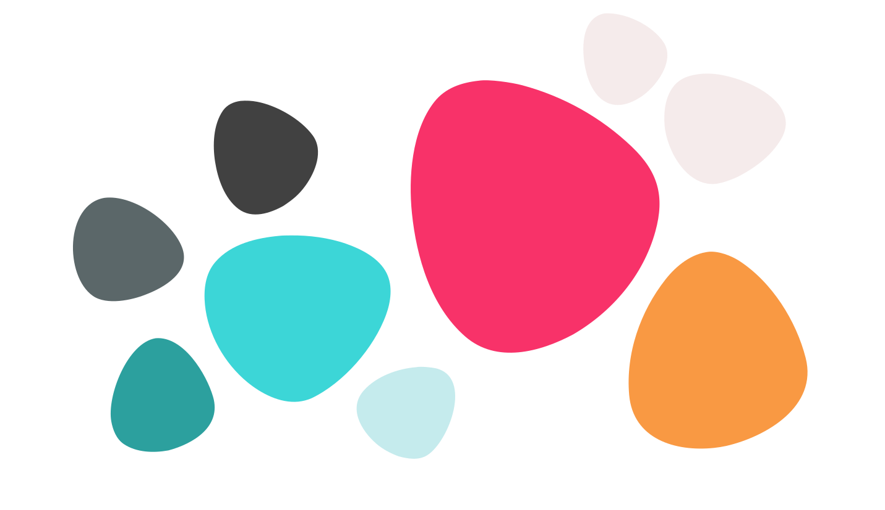
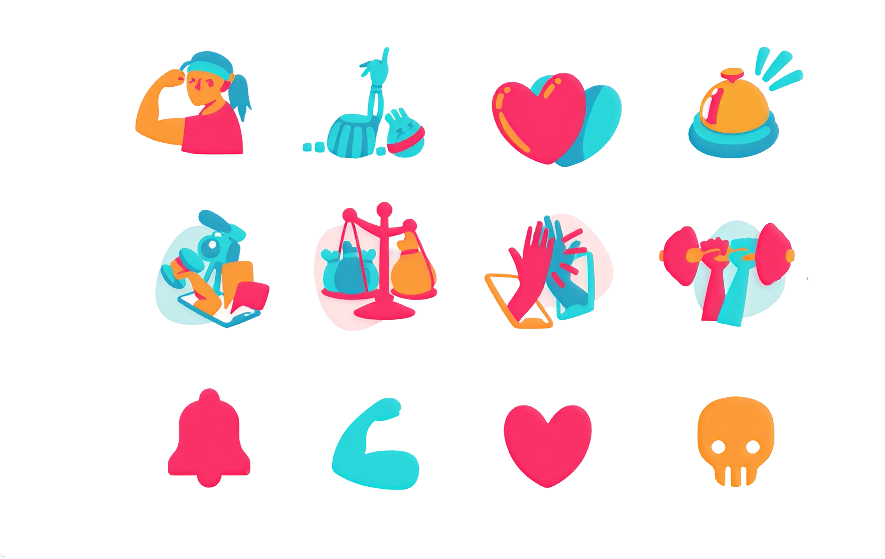

Gymboo
UX research & UI/UX design
Training together, apart.
Gymboo was created in 2020 during a university project amid the COVID-19 pandemic. Tasked with designing an app to navigate lockdown restrictions, our team focused on fitness and social relationships. Gymboo allows athletes and instructors to train remotely while offering social features like adding friends, sending reactions, and sharing workout photos and videos.
Role
UX Researcher, UI/UX Designer
Scope
University project · 2020
Read time
5 minutes
{{ s.kicker }}
{{ s.title }}
Research goals
{{ g.text }}
{{ s.body }}
Research methods
{{ s.body2 }}
The name comes from gym + boo, the affectionate nickname you give a close friend, to represent the fact that Gymboo is a social app where people train together. The final "o" doubles as a dumbbell icon.
Colour palette
Pink leads the interface, with blue and orange as secondary accents and a neutral grey for text and surfaces.

Illustrated icon set
A custom set of illustrated icons carries the tone of the app: reactions, achievements, and training states drawn in the same flat, two-colour style.

{{ slideLabel }}
{{ slideNote }}
{{ w.label }}
{{ w.note }}
Research results
{{ r.t }}
Storyboard
{{ s.storyIntro }}
{{ m.name }}
We designed four personas to represent the key users of the platform: two athletes and two trainers. Each persona captures different motivations, behaviors, and challenges. The athlete personas focus on social engagement, personal motivation, and workout preferences, while the trainer personas highlight different coaching styles, class management approaches, and interaction with clients.
We then designed an emotional map to identify key pain points and emotional triggers throughout their journey. This allowed us to highlight critical moments, such as motivation dips for athletes or engagement challenges for trainers, ensuring that Gymboo’s features effectively address their needs.
{{ t.name }}
{{ c.name }}
{{ d.name }}
Virtual room
{{ p.phase }}
{{ it.name }}
How might we
{{ s.hmw }}
{{ f.name }}
{{ f.note }}
Takeaways
What I took away from it.
Gymboo was the first project where I ran the whole process end to end, on a problem that had just become real for everyone: how to keep training together when the gym is closed. Designing for two groups at once, athletes and instructors, meant every feature had to work from both sides, and the emotional map was what kept the social side from becoming decoration.
- Applied end-to-end UX/UI methods, from research to prototyping
- Designed for two distinct user groups: athletes and trainers
- Used emotional mapping to identify critical pain points
- Balanced usability with social interaction features